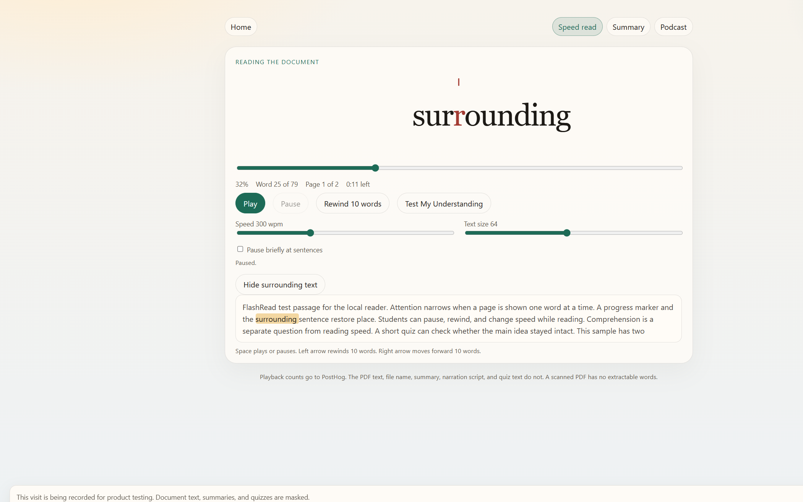
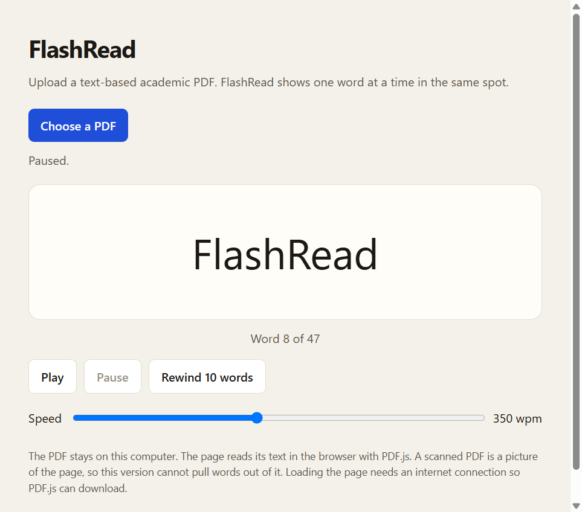
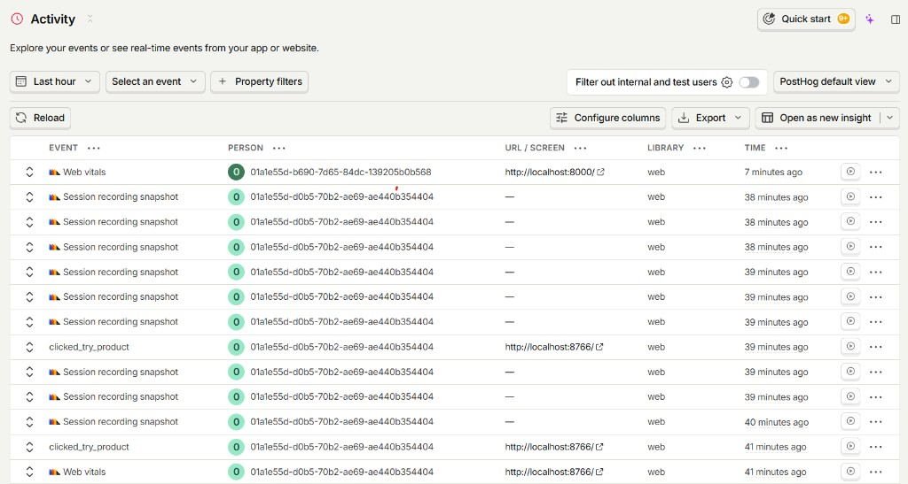

What works now: upload a text-based PDF and choose Speed Read, Summarize, or Podcast without uploading again. Speed Read plays, pauses, rewinds 10 words, scrubs, and sets speed from 150 to 600 WPM. It shows percent complete, word position, PDF page, time left, a focal letter, and the surrounding text with the current word highlighted. Summarize, Podcast, and Test My Understanding call the local server, which calls OpenRouter only when OPENROUTER_API_KEY is in .env. Without that key, those buttons explain how to add it and do not invent a summary, quiz, or audio file. Podcast audio, once a script comes back, is a WAV from the Windows voice on this computer, not a cloud studio voice. A live model reply was not produced in this build because this machine has no .env key. The live cloud URL and two-minute video come in Build 5.

Local reader on November 19, 2026, paused on a 79-word, two-page test PDF. The screenshot shows the focal letter, progress, page, time left, and highlighted context. It does not show a live AI summary, quiz, or narration.

Local reader, paused on word 8 of a 47-word, two-page test PDF at 350 words per minute. This shows Play, Pause, Rewind, and the speed slider. It does not show the optional AI summary.
This page sends a pageview and clicked_try_product to PostHog. Session replay starts only after you click Allow recording below. Tell testers when recording is on. The local app sends playback events the same way and does not send the PDF text, file name, summary, script, or quiz text. After a real run it can also send mode_selected, summary_generated, podcast_generated, quiz_started, and quiz_completed. The November 16 screenshot below does not include those newer events. To capture them: open PostHog project 723597, Activity, use the app at http://localhost:8000, then refresh Activity.

PostHog Activity, November 16, 2026, project 723597 (US Cloud). The list includes clicked_try_product, session recording snapshots, and web vitals from the local app at http://localhost:8000.
Living PRD (Product Requirements Document)
Updated every week as we test with real users and learn what works.
PRD v3, November 19, 2026. Earlier statements stay where they still describe the product.
1. Target User & The Job to Be Done
Who is this for? NYU Stern MBA students with lengthy assigned readings, including academic articles and case studies.
The problem: Long, dense PDFs are time-consuming and can make it difficult to maintain attention and reading momentum.
The painful "Before" workflow: Students scroll through dense PDFs and repeatedly lose their place or focus.
The "After" workflow with this product: Students upload a PDF once, then speed-read the document, generate a summary and speed-read that, or listen to a short narration. Each mode can ask for a quiz grounded in the original PDF. Progress, page, and surrounding text stay visible during speed reading.
FlashRead is meant to help students keep their place. It does not claim that reading faster improves comprehension. That is the hypothesis this build makes testable.
2. Scope & Explicit Non-Goals
In Scope (Core Workflow): Upload a text-based PDF, choose Speed Read, Summarize, or Podcast, and switch modes without uploading again. Speed Read shows one word at a time with play, pause, rewind 10 words, a scrubber, and speed from 150 to 600 WPM, plus percent, page, time left, and surrounding text.
In Scope (AI, click-triggered): Summarize, write a five-question quiz from the original PDF, or write a narration script. The local server sends the extracted text to OpenRouter only after the click. A quiz has four choices, one correct answer, an explanation after the student answers, and a score. The narration script is spoken on this computer into a WAV file.
Out of Scope #1: AI chat, and any summary or narration that is treated as a substitute for checking the source.
Out of Scope #2: OCR for scanned PDFs (pages that are images of text).
Out of Scope #3: Collaborative annotations, accounts, or a hosted backend. A cloud podcast voice is also out of scope until a paid voice service is approved.
3. Biggest Risk, How Build 3 Tests It, and How the App Works
Biggest risk: Can FlashRead help a student get through a document with less disorientation, without giving up comprehension? A classmate said the earlier reader felt like an endless stream of words with no sense of the page. Speed alone is not evidence of understanding. A separate technical risk remains: multi-column pages, headers, and footnotes can still extract out of order.
How this build tests it: The reader now shows percent complete, word position, the PDF page when extraction has one, time left at the chosen speed, and a context panel that highlights the current word. That makes disorientation observable: a tester can say whether they still feel lost. Test My Understanding, after a key is added, scores five questions from the original PDF, which is a check on comprehension rather than a claim that speed reading improves it. PostHog can record pdf_uploaded, mode_selected, reading events, summary_generated, podcast_generated, quiz_started, and quiz_completed with counts and scores only. Those events still cannot prove the words were in the right order. A person has to compare the reader with the PDF. Session replay stays off until Allow recording, and document text, summaries, and quizzes are masked.
How it works:app/serve.ps1 serves app/index.html at http://localhost:8000. PDF.js 3.11.174 extracts text in the browser and keeps the page number on each word. One reader plays either the document or a summary. Summarize, quiz, and podcast script are POST requests to that server. The server reads OPENROUTER_API_KEY from .env and calls OpenRouter model openai/gpt-4o-mini. The key is not in the HTML. Podcast audio is a WAV written by Windows speech under app/narration/, which git ignores. PostHog uses public project token phc_kRaNWd2sA5tThvAbEowwwewF8c5kZvoCXU6MJ7TnrWyV and host https://us.i.posthog.com. page_type is product_page here and local_app in the reader.
4. Unit Economics & Analytics Snapshot (Updated Weekly)
Cumulative Build Spend
$20 Cursor credits purchased in Build 1; amount used unconfirmed. Build 2 and Build 3 API spend measured at $0.
Est. Cost Per User Run
Reading and local WAV: $0. Summary, quiz, or script: under $0.02 at the November 16 gpt-4o-mini rates, only if a key is set.
User Evidence (Analytics from Build 2)
PostHog Activity shows clicked_try_product, session recordings, and local-app web vitals. See the screenshot above.
Sponsor Call (Week 6)
TBD
Reading, GitHub Pages, and the Windows WAV have no metered charge. No PostHog invoice was recorded in this repository. OpenRouter's listed price for openai/gpt-4o-mini, recorded here on November 16, 2026, is $0.15 per 1M input tokens and $0.60 per 1M output tokens. A summary considers at most about 24,000 characters, in up to three chunks plus one combine, and asks for at most 500 tokens on the final pass. A quiz or podcast script sends at most 12,000 characters. At those caps and rates, each action is under two cents even if every four characters were a token. No successful model call was made on November 19, so measured AI spend for this build is $0.
Weekly Build Log
Build on at least two separate days each week outside class, including the November 3 break. Push commits and log actual progress, failures, PRD changes, costs, and hours here. All build deadlines are noon, New York time.
Build 1 · Intent.md & Throwaway Prototype (Due Nov 9)
What shipped: A local FlashRead RSVP prototype, PRD v1 (above), and a real screenshot of the running app. The prototype is a single page (app/index.html). It uploads a text-based PDF, extracts the text in the browser with PDF.js, and shows one word at a time in a fixed spot. Controls: Play, Pause, Rewind 10 words, and a speed slider from 150 to 600 words per minute. It also shows progress ("Word 8 of 47"), handles the end of the document, and shows a clear message for unreadable PDFs. A small built-in PowerShell script (app/serve.ps1) runs it at http://localhost:8000 without installing Python or Node.js. See the screenshot above.
Things learned with AI: I learned basic Git and GitHub workflows, including cloning a repository, plus how to direct a coding agent (Cursor), serve a web app locally, and verify it in the browser. Asking the agent for a plan first and approving it before any code kept the prototype to one file I can read. I also learned to ask for proof rather than accept "it works": the agent's first test PDF was malformed and cut off the last word, which looked like an app bug until the test file was fixed.
What broke / changed in PRD: GitHub Pages initially failed with an internal server error; the Product Page deployment still needs to be confirmed. Cursor hit its usage limit partway through the build. Python and Node.js were not installed, so the prototype runs from a small PowerShell server instead. That server first froze on idle browser connections and kept running when a second copy was started; both issues were corrected (a read timeout and a clear error on a busy port). PRD change: scope narrowed to text-based PDFs, with OCR explicitly out of scope.
Testing evidence: Cursor ran automated browser tests in its built-in browser against a generated two-page, 47-word text PDF. All passed. Passed: all 47 words extracted in order across both pages; Play advanced through to the end and stopped with an end message; Pause held the same word for 0.8 seconds; Rewind moved back 10 words (and stops at word 1); the slider is limited to 150–600; measured timing was about 404 ms per word at 150 WPM (expected 400) and 106 ms at 600 WPM (expected 100); a broken PDF showed an error and kept Play disabled; uploading a new PDF reset to word 1. The uploads and button clicks were scripted in the browser. Manual testing with the Windows file picker and a real academic reading is still pending.
Known limitations: Not yet tested by hand, on a real academic article or case study, or by any outside user. Scanned PDFs produce no words (no OCR). Multi-column layouts, headers, footers, and footnotes may come out in a messy order. Needs internet to load PDF.js. Nothing is saved; closing the tab loses your place. Opening index.html by double-clicking it was not tested.
Cost & time this week: Purchased $20 of additional Cursor credits after reaching the initial usage limit; the amount of those credits actually used is not yet confirmed. No paid APIs or hosting. About 4 hours, including installation, setup, development, and troubleshooting.
Build 2 · Smallest Local Version & PostHog (Due Nov 16)
Progress: PostHog's web snippet is on this page and on the local app, using the public project token and https://us.i.posthog.com. This page sends $pageview and clicked_try_product. The app sends pdf_uploaded, reading_started, reading_paused, reading_completed, reading_speed_changed, and ai_summary_completed after a real summary returns. Events include page_type and leave out the PDF text, file name, and summary text. Session replay stays off until the visitor clicks Allow recording. The reader still plays, pauses, rewinds 10 words, and changes speed from 150 to 600 WPM. An optional Summarize PDF with AI button calls the local server, which calls OpenRouter only when OPENROUTER_API_KEY is in .env. PRD v2 is this page. AGENTS.md documents setup. A real PostHog Activity screenshot is in the showcase above.
Lessons: The PostHog snippet belongs in the page because the token is public. The OpenRouter key does not, so the summary goes through app/serve.ps1. Playback analytics can show whether a session started and finished. They cannot show comprehension. Finding the PostHog project by ID 723597 was enough even when the UI still said Default project.
Problems: The published page was missing the PostHog snippet when it was checked before this build; that snippet is now in the <head>. A live model reply was not produced because there is still no .env OpenRouter key, so Summarize shows a setup message. Git commits for this week are on November 16 only; earlier commits are November 9. John later confirmed a PDF upload on the local app.
What changed in the PRD: AI summarization moved from a blanket non-goal to an optional, click-triggered paragraph. Chat, quizzes, and using a summary as a substitute for reading stay out of scope. The biggest risk is still bad extraction order from real academic PDFs, plus whether one-word reading is followable.
Costs: Measured API and hosting spend for this build: $0. The Build 1 log records a $20 Cursor credit purchase; how much of that was used is still unconfirmed. A future summary is under one cent at OpenRouter's listed gpt-4o-mini rates on November 16, 2026 ($0.15 / 1M input tokens, $0.60 / 1M output tokens), given the 6,000-character and 180-token caps.
Hours: Not recorded in this log.
Checks run with this build: On November 16, a browser check of the local app used a 16-word text PDF. The page extracted 16 words, Play advanced, Pause held the same word, Rewind returned to word 1, the slider changed to 600, and Play then stopped at the end of the document. Summarize PDF with AI returned the missing-key message. Captured event properties had word count, page count, and speed, not the test word. PostHog Activity later showed clicked_try_product, session recording snapshots, and web vitals from http://localhost:8000; that dashboard image is on this page. John confirmed a real PDF upload. There is still no successful OpenRouter reply on this page.
Build 3 · Build.exe: The Core Workflow (Due Nov 23)
Progress: The local app now opens on a homepage with three modes: Speed Read, Summarize, and Podcast. One upload can be used in all three. Speed Read keeps play, pause, rewind 10 words, and 150–600 WPM, and adds a scrubber, percent, PDF page, time left, a focal letter, text size, an optional sentence pause, keyboard shortcuts, and surrounding text with the current word highlighted. Summarize, quiz, and podcast script go through app/serve.ps1 to OpenRouter. The quiz UI scores five questions after a valid response. Podcast audio is a local Windows WAV after a script returns. PRD v3 is this page. The new screenshot above is the running reader on a 79-word, two-page test PDF.
Lessons: A classmate's "endless stream of words" comment is a product risk, not a claim that speed reading works. Page numbers have to come from PDF.js during extraction. A CSS display rule can override the HTML hidden attribute, so the homepage stayed visible on top of the reader until that was corrected. The OpenRouter key is still absent, so a live model reply is not evidence yet.
Problems: There is no .env and no OPENROUTER_API_KEY on this machine. Summarize, Podcast, and Test My Understanding return the setup message. Windows speech can write a WAV; that was checked with a one-sentence probe, not through a full Generate Podcast click. Git history before today is November 9 and November 16 only. This build does not backdate commits.
What changed in the PRD: Quizzes and a summary that can itself be speed-read moved into scope. A cloud podcast voice, chat, OCR, and accounts stay out. The biggest risk is now whether progress and a source quiz reduce disorientation without pretending that speed improves comprehension. Extraction order is still a risk.
Costs: Measured API and hosting spend for this build: $0. No OpenRouter call was made. Local WAV generation has no provider charge. The Build 1 log records a $20 Cursor credit purchase; how much of that was used is still unconfirmed.
Hours: Not recorded in this log. John can fill in hours spent.
Checks run on November 19: Browser checks on the local app used a 79-word, two-page text PDF. The page reported 79 words and 2 pages. Speed Read showed word 1 on page 1, then Play advanced (observed at word 29 and later), Pause held the word, Rewind moved back 10 words, the left arrow moved back another 10, the scrubber reached page 2, and 600 WPM changed the time-left label. Context highlight matched the current word. Font size changed to 80px and was set back to 64px for the screenshot. Summary, Podcast, and Quiz without a key showed the setup message and created no audio. A stand-in quiz payload scored 5 of 5, hid answers before the click, explained the choice after it, and Try Again returned to question 1. Home still had the same PDF, and Speed Read restored word 61 of page 2. Server checks: the app page returned 200, a missing-key summary, quiz, and podcast returned 503, an empty summary body returned 400, and a path outside the app folder returned 404. The server log recorded counts, not document text.
Build 4 · Test.py: Choose Track A or Track B (Due Nov 30)
Chosen track: [A: 10-case domain eval and one outside target-user review; OR B: 3–5 outside users and replay findings]
Results and improvements: [Before/after evidence; for Track B, fixes to the top three friction points]
PRD v4 changes: [What the evidence changed]
Cost & time this week: $[0.00] · [0] hours
Build 5 · Ship.installer: Launch Ops, Rollback Check & 2-Min Video (Due Dec 7)
Launch Ops & Safety: [Verified no exposed keys, set spend cap, tested 2-minute rollback]
2-Minute Video & Final Polish: [Link/embed above]
Cost & time this week: $[0.00] · [0] hours
This Product Page can record a visit for product testing. Recording stays off until you allow it.